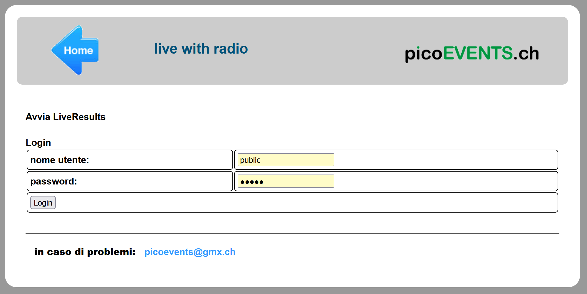
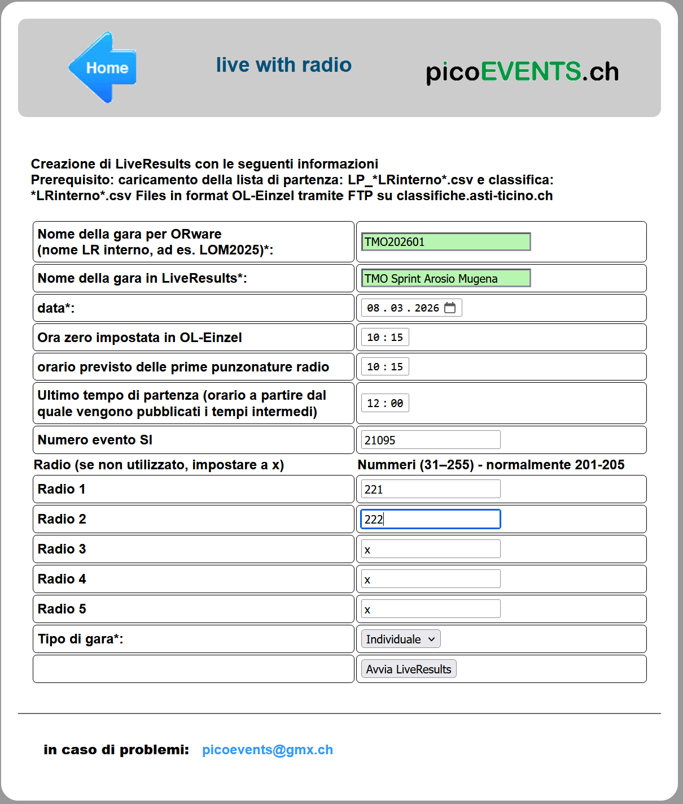
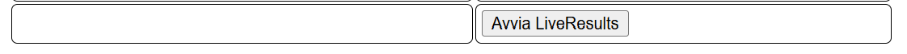
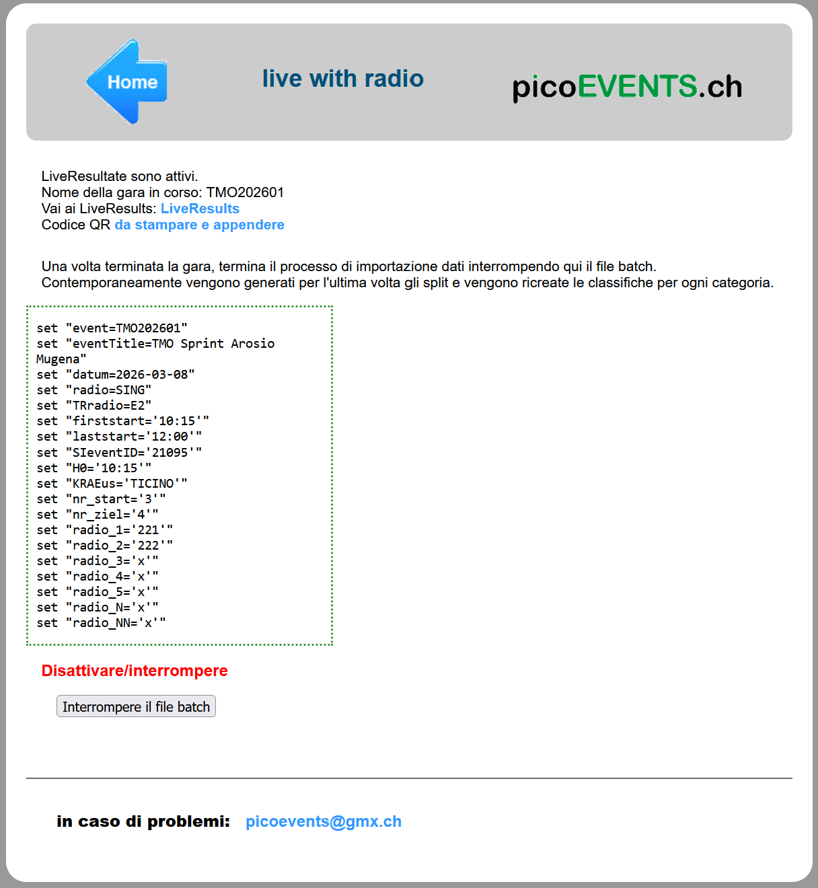
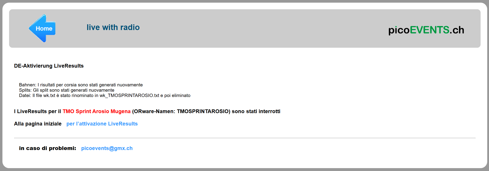

Portale PicoEvents - Per gli organizzatori¶
Creare la gara su PicoEvents per le liste di partenza e le classifiche online, come pure per le classifiche sulle TV al centro gara.
Creazione gara¶
Come operazione preparatoria prima della gara, crea un evento sul sito PicoEvents.
Gare multiple
PicoEvents permette la gestione di più gare in parallelo, ma non è possibile crearle e amministrarle con l'attuale interfaccia web. Se hai bisogno di attivare più gare contemporaneamente, contatta Maja a picoevents@gmx.ch
- Accedi al sito https://results.picoevents.ch/tic.
- Fai login con
publice parola chiaveTI_22.

- Compila il formulario:
Nota: hai 30 minuti a disposizione tra il login e l'avvio diLiveResults.
Nome della gara per ORWare: questo nome è univoco per la gara e viene usato anche come base per il nome del file esportato daOL-Einzel.
Usiamo come convenzione il nomeTIPO_GARA ANNO NR_GARA.
Es.TMO202601oNAZ202605TIPO_GARA:TMO,NAZ,SCOOL,SELEANNO: a 4 cifreNR_GARA: numero della gara a 2 cifre (es. 1. TMO01, 5. Nazionale05)
Nota: per ragioni tecniche deve essere corto.
Nota: questo campo accetta solo lettere maiuscole e cifre ma nessun carattere speciale (spazio, trattini, ecc.).
Nota: PicoEvents si aspetta questo nome come nome dei file con classifiche e liste di partenza:
Es. per il 1. TMO del 2026TMO202601.csvper le classificheLP_TMO202601.csvper le liste di partenza
Nome della gara in LiveResults: Nome dell’evento come visualizzato nell'elenco delle gare.
Usiamo come convenzione il nomeTIPO_GARA FORMULA_GARA LUOGO.
Es.TMO Sprint ArosiooNazionale ArcegnoTIPO_GARA:TMOoNazionaleFORMULA_GARA:Long,Middle,Sprint,StaffettaLUOGO: centro gara o cartina.
Nota: la lista serve praticamente solo il giorno della gara.
Nota: per ragioni tecniche va tenuto breve.
Nota: questo campo accetta solo lettere (maiuscole e minuscole), cifre, spazio e caratteri accentati, ma non altri caratteri speciali (punto, virgola, trattini, ecc.).
Data: la data della gara.Ora zero come impostata in OL-Einzel: è importante non impostare l'ora zero pubblicata nelle info gara, ma quella impostata nel software OL-Einzel.Orario previsto delle prime punzonature radio: impostando questo valore si evita che il programma continui a cercare punzonature radio molto prima del passaggio del primo concorrente.
Nota: al limite impostare lo stesso valore dell'ora zero della gara.Ultimo tempo di partenza (orario a partire dal quale vengono pubblicati i tempi intermedi): per regolamento, concorrenti non ancora partiti non possono vedere i tempi intermedi di tratta.
Nota: PicoEvents non utilizza a questo scopo gli orari di partenza esportati da OL-Einzel, per cui questo orario va impostato a mano.Numero evento SI: questo valore cambia ogni anno. Per il 2026 utilizzare21095.Radio: impostare i numeri dei punti radio.
Nota: PicoEvents non supporta la sostituzione di scatolette come in OL-Events. I numeri indicati devono quindi corrispondere ai numeri effettivi della scatoletta.Radio 1: di regola221.Radio 2: di regola222.
Nota: lasciare impostati axi punti non utilizzati.
Nota: iFinishnon vengono indicati.
Tipo di gara: seleziona il tipo di gara traIndividuale(normali TMO)Staffetta(sia TMO che Sele)Squadre(sCoolCup).
-
Quando il formulario è completo, premi sul bottone
Avvia LiveResults.
Nota: Se è passato troppo tempo tra il login e l'avvio di LiveResults, verrà visualizzata una pagina d'errore e bisogna ricominciare da capo.

-
Le classifiche si attivano e viene mostrata una schermata con:
- Link alla classifica online
- Link a un codice QR da stampare che porta direttamente alla classifica online
- Informazioni sulla configurazione
- Un bottone per interrompere la generazione delle classifiche

-
Seleziona il link al codice QR, stampalo e appendilo al centro gara.
Questo codice porta direttamente alle classifiche della tua gara. -
Interrompendo il file batch si interrompe il processo di importazione dei dati.
Nota: la gara con tutti i suoi dati resta visible agli utenti.
Pubblicazione liste di partenza¶
Per pubblicare le liste di partenza con OL-Einzel, vedi i dettagli in software > OE12 > Liste di partenza > Pubblicazione.
Usa il nome ORWare della tua gara
Nel nome del file delle liste di partenza LP_<NOME_ORWARE>.csv assicurati di usare il nome ORWare della tua gara e non quello già impostato in OL-Einzel, che probabilmente è il nome della gara precedente.
Nota: secondo l'immagine precedente, il nome del file per questa gara sarebbe LP_TMO202601.csv.
Ricordati di NON impostare il Nome file univoco.
Pubblicazione classifiche¶
Per pubblicare le classifiche con OL-Einzel, vedi i dettagli in software > OE12 > Classifiche > Classifiche TV / Online.
Usa il nome ORWare della tua gara
Nel nome del file delle classifiche <NOME_ORWARE>.csv assicurati di usare il nome ORWare della tua gara e non quello già impostato in OL-Einzel, che probabilmente è il token della gara precedente.
Nota: secondo l'immagine precedente, il nome del file per questa gara sarebbe TMO202601.csv.
Ricordati di NON impostare il Nome file univoco.
Verifica classifiche online¶
Verifica le liste di partenza e le classifiche sia sul sito online che sulle TV.
- Accedi al sito results.picoevents.ch e verifica che le liste di partenza corrispondano.
Nota: per i dettagli, vedi la pagina visualizzazione - Seleziona il template per le due TV
- Vai su results.picoevents.ch/tv.php
- Seleziona
Kategorien bearbeitenrelativo alla tua gara - Seleziona dal menu a tendina il template per ognuna delle TV.
Nota: Puoi selezionare lo stesso template su entrambe le TV.
Nota: Puoi anche definire un layout specifico per la tua gara:- Una riga per ogni colonna
- Testo dell'intestazione della colonna
- Un
: - La lista delle categorie separate da
,
- Salva le impostazioni premendo su
Sichern - Verifica nel browser la corretta visualizzazione delle liste di partenza e classifiche delle due TV premendo su
Start Screen 1oStart Screen 2
- Controlla le liste di partenza e le classifiche sulle TV al centro gara, verificando che si vedano tutti i dati, soprattutto i tempi di gara. In caso contrario, diminuisci il fattore di scala.